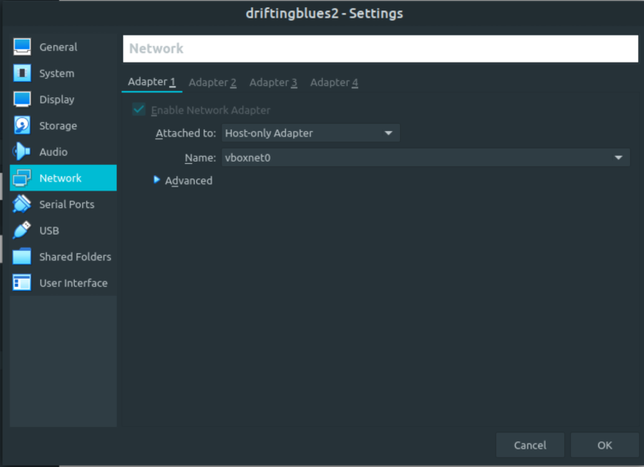
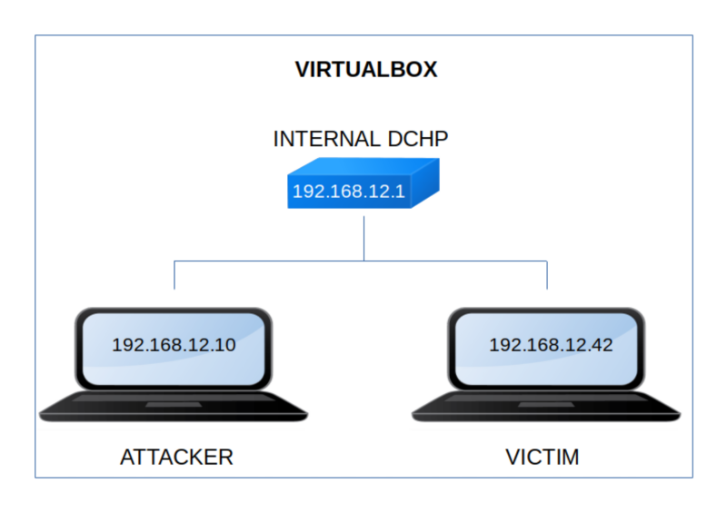

DriftingBlues 2
▸ DriftingBlues 2
▸ 1. Scan Network
▸ 2. Finding Services and Ports
▸ 3. Enumerate
▸ 3.1 Scan the website with nikto
▸ 3.2 Wpscan
▸ 3.3 Create a reverse shell
▸ 4. Explotiation
▸ 4.1 Access to reverse shell
▸ 4.2 Get access as an user (First flag)
▸ 5. Privilege Escalation
▸ 5.1 See what freddiy can do
▸ 5.2 Privilege root (2nd flag)
Difficulty: Easy.
Flag: 1 flag.
Learning:
• Reconnaissance
Scan Network
Find services
• Enumerate
Scan website with “nikto”
Wpscan
Create a “reverse shell”
• Exploitation
Access to “reverse shell”
Find users and get access
• Privilege Escalation
See what an user can do
Privilege root with “gtfobins”
• Download (Mirror): https://download.vulnhub.com/driftingblues/driftingblues2.ova
• Download (Torrent): https://download.vulnhub.com/driftingblues/driftingblues2.ova.torrent
Install the machine on VirtualBox:
1. Download the file.
2. On Virtualbox choose File->Import Appliance.
3. Select the file “ova”.
4. Accept to import.


Watch your Machine IP.
$ ifconfig
Output:

Diagram
